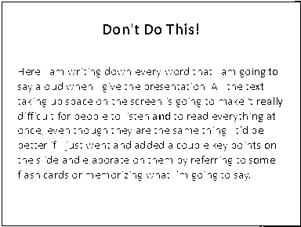
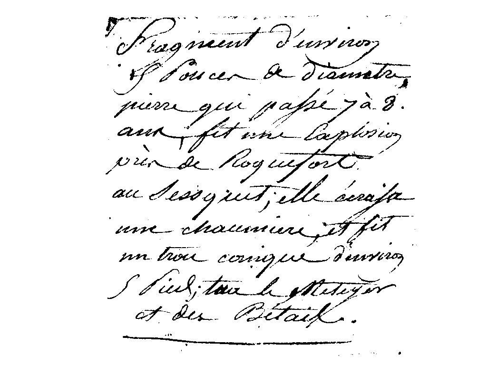
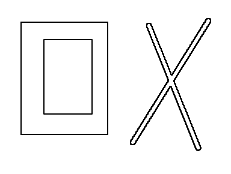
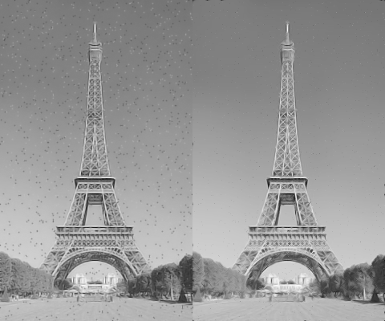

Question 3

This image worked best with a threshold of 56. Although it does not clearly show the words
anymore, a higher threshold would result in a creeping black background from right to left.
|
Question 4

The best threshold was 115. If a higher threshold is used, the writing could become
a bit more visible, but dark spots would slowly appear as you slide it up.
|
Question 5

The black rectangle boundary becomes white and only the outer edge of it is left / detected.
Then on the inside of the rectangle where the grey meets the black outer part another line / edge is found and left.
Lastly, the lines forming the X turn into a border in the shape of the X with white now inside.
|
Question 6

The first thing I tried was the noise reduction filter in photoshop cs2 (Left).
This one was not very effective as the most I was able to do was make the image more blurry.
The method fails to remove the specks from around the screen.
Next, I tried using gimps noise reduction filter (right). This one worked great and although it did make the image a bit blurry,
it was effective in removing virtually all the spots across the image. Some parts of the image seemed to get blurry as well,
but this was a result of the method blending the noise into the background.
|